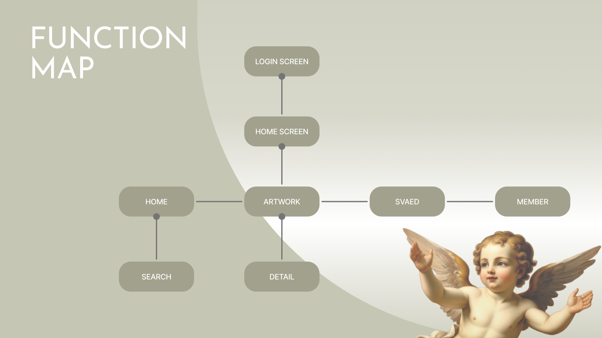
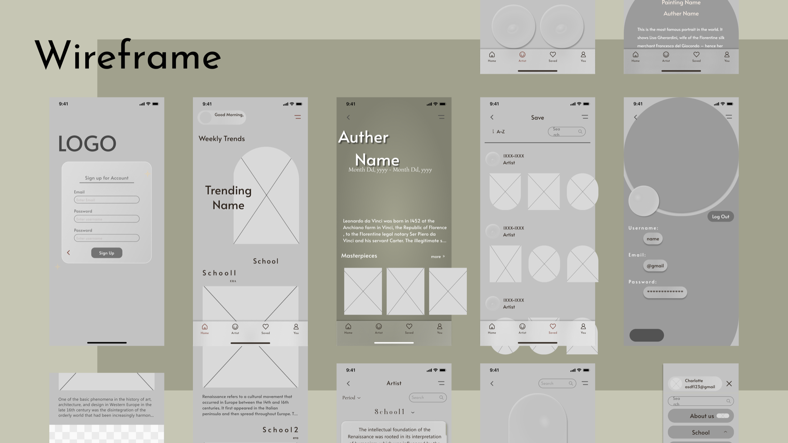
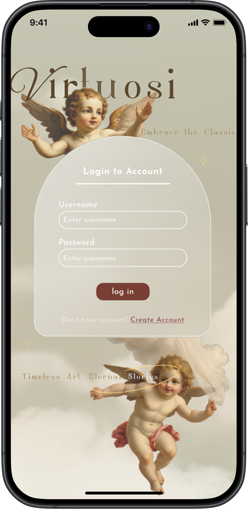
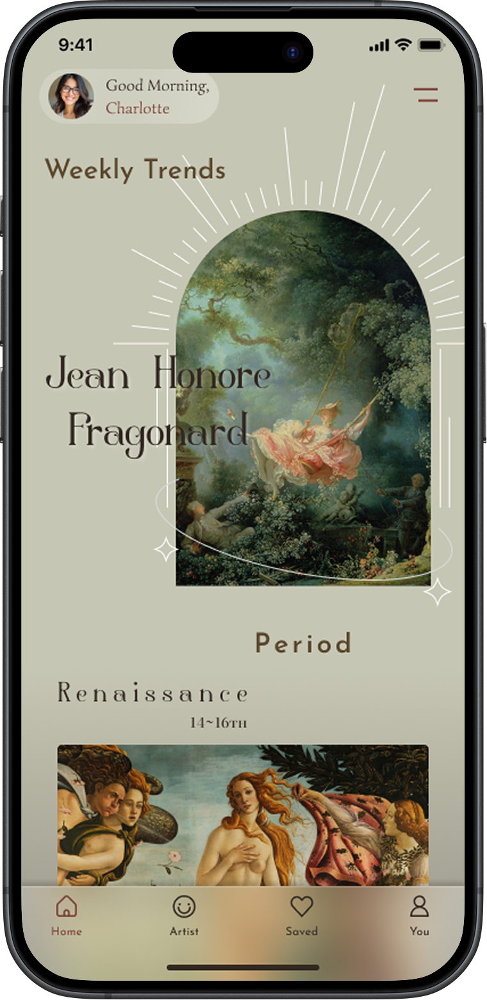
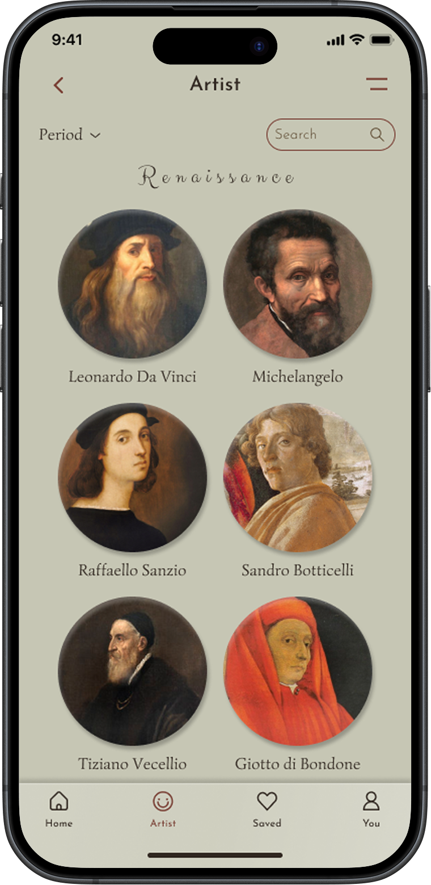
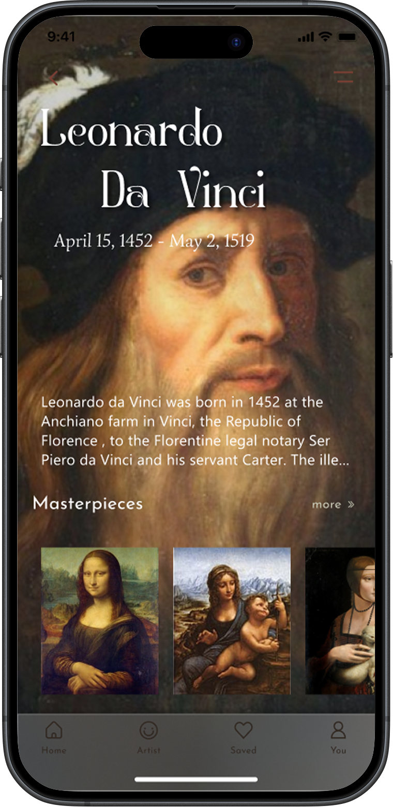
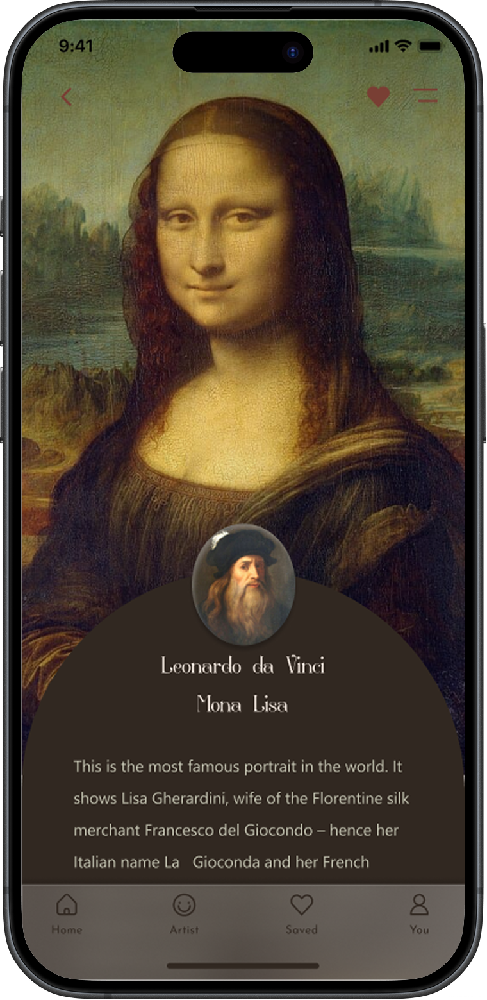
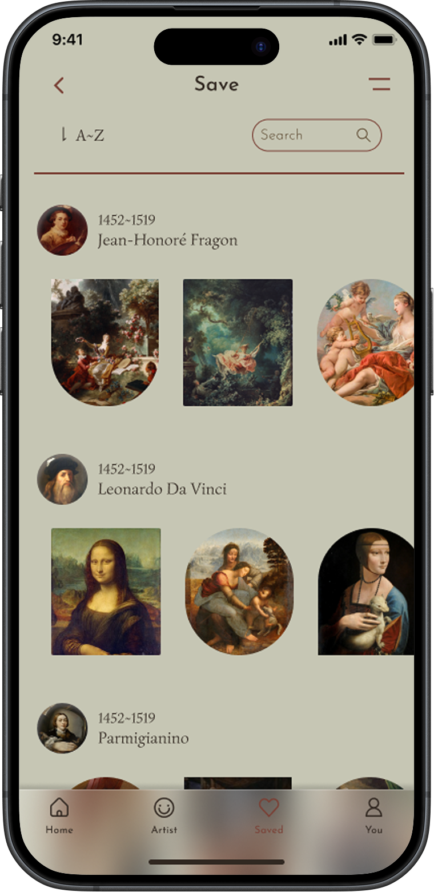
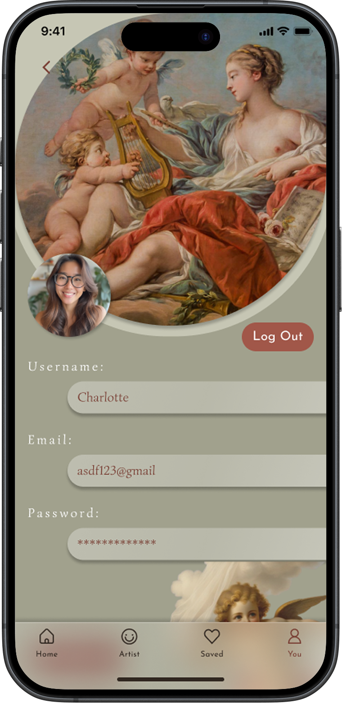
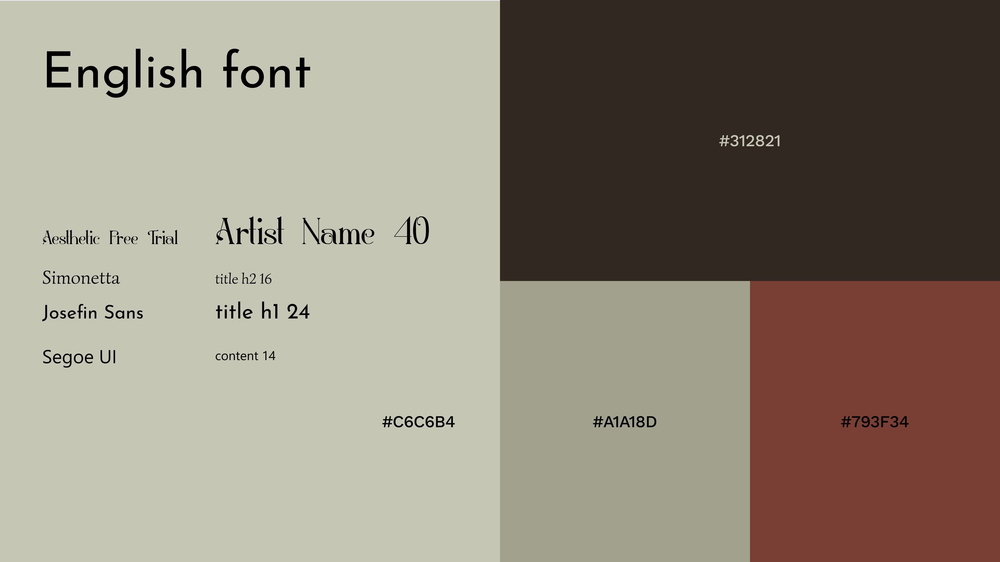

00
一個簡單易用的名畫入口
看名畫的 App 通常長成兩種：資料庫式的清單，或是美術館官方的導覽。前者沒有情緒，後者資訊太重。Virtuosi 想找中間值——先被畫吸引，再願意讀下去。
-
畫作即介面
作者頁與畫作頁都以整幅畫當背景，色塊與留白全部退到後面。
-
故事分層釋出
生卒年 → 傳記摘要 → 代表作，一次只給一層，不把生平一口氣倒完。
-
收藏依作者聚合
收藏頁用作者分組、A~Z 排序，收藏久了自然長成一份自己的美術史。
01
功能地圖
登入後進入首頁，底部四個分頁（Home / Artist / Saved / You）並行；主動線是 Artwork → Detail，Search 掛在 Home 之下。

02
從線框稿到介面
線框階段就先定好每頁的閱讀順序，視覺只負責放大這個順序。

03
畫面的思考過程
七個畫面，依實際流程逐一拆解我怎麼決定「誰先被看見」。
貫穿全站的形狀是「拱」。登入卡、首頁的本週精選、畫作頁的說明卡、會員頁的主視覺，全都是拱形——那是美術館的拱窗與畫框輪廓。它讓七個畫面即使內容差很多，仍然像同一個空間裡的東西。

Login — 先立調性，再要帳號
- 1字標壓在天使圖上：進 App 第一眼是一幅畫，不是輸入框。先確立「這是關於古典藝術的地方」。
- 2拱形毛玻璃卡：表單浮在畫上而不是蓋掉畫，磨砂讓背景的雲和天使仍然透出來。
- 3Timeless Art, Eternal Stories：標語放在最下方，是離開這頁前的最後一句話。

Home — 先給情緒，再給分類
- 1問候與頭像：Good Morning, Charlotte——個人化的入口，點擊直達會員頁。
- 2Weekly Trends 拱形主圖：整頁最大的視覺量體，光芒線與星芒把視線收束到畫上，先讓人被畫勾住。
- 3Period 分類在下方：Renaissance 14~16th 這類知識性內容放在「感受」之後，不搶第一眼。
- 4底部四分頁常駐：Home / Artist / Saved / You 一直在，任何深度都能一步跳出。

Artist — 用人臉當索引
- 1Period 篩選 + Search 並列：一個給「不知道要找誰」的人瀏覽，一個給「已經知道」的人直達。
- 2圓形頭像雙欄網格：人臉比名字好記；圓形也讓不同尺寸、不同構圖的肖像畫被統一成同一種節奏。
- 3時期名用手寫體：Renaissance 以花體呈現，和下方的作者名（襯線）拉開層級，一眼知道那是分組標題不是人名。

Artist Detail — 讓肖像自己當背景
- 1自畫像滿版當底：不開獨立的圖片區塊，整頁就是那張臉，文字直接壓在上面。
- 2姓名斷成兩行：Leonardo / Da Vinci 錯開排列，避開肖像的臉部，讓字和畫不互相干擾。
- 3傳記只給一段就截斷：以「⋯」收尾，想深入的人才點開，不強迫所有人讀完生平。
- 4Masterpieces 橫向捲動：代表作以橫列收在底部，看完生平自然接到作品，動線不用回頭。

Artwork Detail — 讓文字浮在畫上面
- 1全幅畫作先行：進頁第一眼只有畫，沒有任何說明文字擋住。
- 2拱形深色卡上浮：說明從下方推上來，拱頂剛好落在人物胸口，不遮臉。
- 3作者頭像壓在拱頂：一個小圓形跨在卡片邊緣，把「這幅畫」和「這個人」縫在一起，也是回到作者頁的入口。
- 4收藏心常駐右上：讀到任何段落都能立刻收藏，已收藏時填滿為磚紅。

Saved — 收藏長成一份美術史
- 1以作者分組：不是一整片縮圖牆，而是「作者 → 他的作品橫列」。收藏本身就被整理成有結構的知識。
- 2作者列帶生卒年：頭像旁標 1452~1519，滑過收藏時順便建立時間感。
- 3縮圖形狀交替：方形、圓形、拱形輪流出現，避免長列表變成單調的格子牆，也呼應全站的拱形母題。

You — 帳號頁也不脫離美術館
- 1拱形主視覺置頂：帳號設定通常最無趣，這裡仍用一幅畫開場，維持整體調性。
- 2頭像壓在拱形邊緣：和畫作頁的作者頭像用同一個手法，個人與收藏被放在同一種視覺語言裡。
- 3欄位用膠囊形長條：圓角呼應拱形，讓表單不像系統預設的方框。
04
設計系統
色票取自畫布本身的顏料——亞麻、赭土、暗棕。
四個字型，一條規則：名字用有藝術感的襯線，需要細讀的地方換成易讀的無襯線。
作者名與時期名是被「觀看」的——它們本身就是視覺元素，裝飾性襯線讓它們看起來像展牆上的標籤。但生平與畫作解說是被「閱讀」的，同一套襯線放到 14px、壓在深色畫面上會直接失守，所以換成無襯線。

四個字型各自的守備範圍
- Aesthetic Free Trial
- 專案名稱設計 · 時期名 · 首頁輪播的作者名
- Simonetta
- 藝術家頁面的藝術家名稱
- Josefin Sans
- Bottom bar · 漢堡選單
- Segoe UI
- 內文解說字
- #C6C6B4
- #A1A18D
- #793F34
- #312821
06
反思
我學到的
（1–2 段，誠實寫。）
如果重來一次
（1–2 段，寫你會怎麼改。）